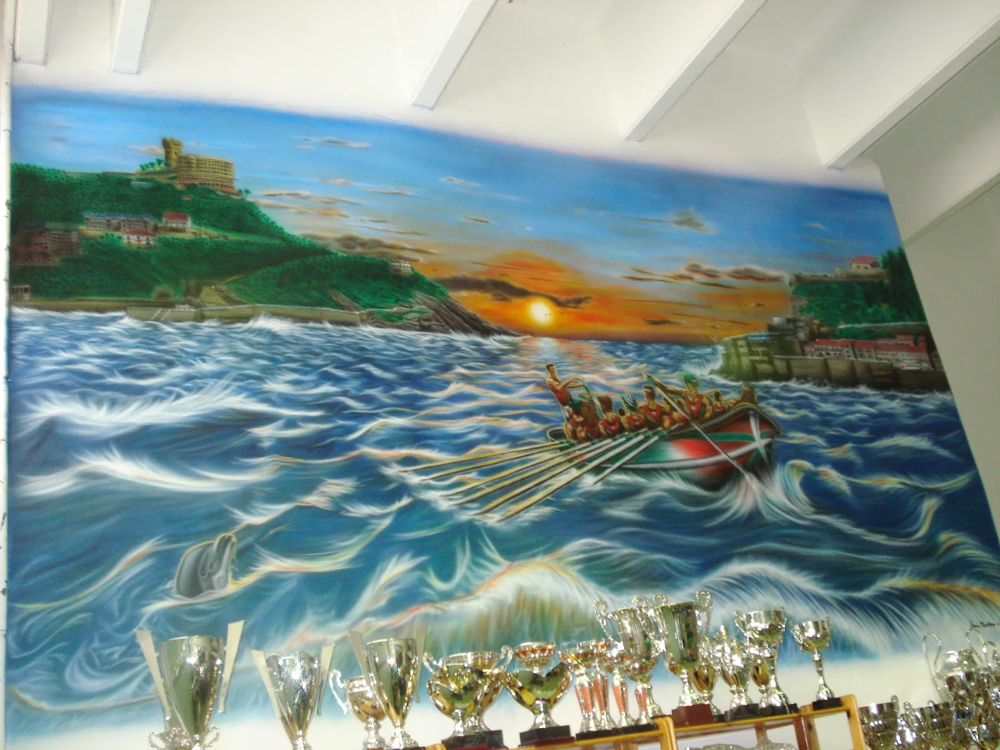
ARTE Y CÓDIGO
El arte define mi forma de pensar, la tecnología amplía lo que puedo crear. Junior en desarrollo, senior en oficio.
↓ DESLIZACódigo, precisión técnica y criterio visual.
Soy Javier Montero, creador de proyectos digitales con experiencia artística y una orientación profesional centrada en la tecnología. No sustituyo la creatividad por la tecnología; las combino para ampliar sus posibilidades.
Diseño y desarrollo soluciones donde funcionalidad, experiencia de usuario e identidad visual trabajan de forma conjunta. La inteligencia artificial acelera la ejecución, pero la dirección, el análisis crítico y la búsqueda de la excelencia siguen siendo humanos.
DAM en Jobie FP
Desarrollo de Software & IA
Objetivo profesional principal y área de crecimiento continuo. Construcción de proyectos digitales integrando software, automatización y análisis de ciberseguridad para aportar soluciones técnicas reales.
Creatividad & Criterio Visual
Ventaja competitiva diferencial. Pensamiento visual, capacidad de observación y control milimétrico del detalle desarrollados a lo largo de años de creación artística de máximo nivel.
Currículum & Terminal
Trayectoria profesional auditable. Terminal emulada en el navegador (opcional): puedes interactuar con la consola o consultar mi currículum de forma visual en la pestaña README.md y descargar el PDF.
Javier Montero • Open to Work IT
Desarrollador en formación (DAM) con trayectoria previa en desarrollo web, diseño gráfico, dibujo artístico y delineación técnica. Combino mi formación en C, C#, Java, SQL, Linux y Ciberseguridad con la responsabilidad, autonomía y excelencia en el trato al cliente desarrolladas a lo largo de más de 18 años de trayectoria laboral continua. Actualmente retomo mi carrera tecnológica con el objetivo de volver al sector IT, aportando un perfil distinto al junior habitual: madurez profesional, visión práctica y capacidad real de resolver problemas.
Atención exclusiva a socios y visitantes internacionales, control de juego como starter y marshall, y mantenimiento de instalaciones. Más de 18 años de trayectoria laboral continua basada en la excelencia en el trato, resolución autónoma de incidencias y máxima discreción.
Pintura y personalización artística de alta precisión sobre vehículos, cascos, atracciones, lienzos, instrumentos y murales. Diseño de logotipos, ilustraciones y desarrollo web del estudio. Dominio integral del aerógrafo, mezclas cromáticas y preparación de superficies (2006 – Actualidad).
Creación y maquetación de páginas web corporativas para clientes de las empresas con Dreamweaver, HTML, CSS, ASP y Flash. Preparación de componentes multimedia e interactivos.
Realización de series de TV animadas como «Las tres mellizas», «Tom el dinosaurio» y «Juanito Jones», manteniendo rigor en intercalación tradicional, dibujo clásico y sincronía de movimiento fotograma a fotograma.
Realización de manuales industriales de ingeniería y dibujo de planos de maquinaria mediante AutoCAD, despieces e instalaciones normalizadas.
Validación de fundamentos de redes (TCP/IP, OSI, enrutamiento), modelo web (HTTP/HTTPS, peticiones, servidores) y bases de sistemas operativos defensivos Linux y Windows.
Formación en progreso sobre arquitectura de seguridad defensiva, criptografía práctica, análisis de vulnerabilidades comunes y metodologías de bastionado.
Aprendizaje basado en resolución práctica de proyectos sin profesores: lenguaje C desde cero, desarrollo de utilidades Unix en Shell, control manual de punteros y asignación de memoria dinámica con prevención de fugas de memoria (0 memory leaks con Valgrind).
Especialización en Java, estructura de clases y paquetes, colecciones, manejo de excepciones y conexión a bases de datos relacionales SQL con JDBC.
Puedes cambiar a la pestaña Terminal CLI (>_) arriba a la derecha para interactuar con la consola emulada o pulsar directamente sobre cualquiera de los botones de comando sugeridos para ver el resultado de inmediato:
Bienvenido al entorno de desarrollo de Javier Montero [DAM & TryHackMe].
Escribe help para ver la lista de comandos o usa los botones superiores.
¿Qué puedo construir hoy? Software con rigor de artesano.
Evidencias de código real: desarrollo backend en Java, aplicaciones multiplataforma, proyectos algorítmicos en C y bases de datos relacionales SQL sincronizados con GitHub.
viermontstudio-website
Unificar desarrollo IT y arte en una plataforma de alto rendimiento, con arquitectura estática sin backend de ejecución propio para reducir la superficie de ataque y simplificar el mantenimiento.
Auditoría técnica integral, diseño visual, especificación minuciosa de correcciones y dirección del proyecto (ejecución técnica asistida por IA).
DAM-JobieFP
Capacitación profesional oficial para diseñar y construir aplicaciones robustas empresariales multiplataforma.
Desarrollo de módulos con Java backend, integración de bases de datos relacionales SQL, programación con C# y administración Linux.
BIRT
Estructuración limpia de la lógica de negocio mediante principios de Programación Orientada a Objetos.
Gestión avanzada de colecciones (Lists, Sets, Maps), control de excepciones, modularidad de código y conectividad JDBC a bases relacionales.
Aprendeaprogramar.com
Asentar los fundamentos del pensamiento algorítmico y control de flujo a bajo nivel.
Desarrollo de ejercicios de estructuras de datos primitivas, algoritmos de búsqueda, funciones modulares y buenas prácticas.
42_Cursus
Desarrollo estricto de software de sistemas sin librerías estándar en lenguaje C puro.
Recreación de la biblioteca `libft`, gestión manual de memoria en heap (`malloc`/`free`) validada con Valgrind sin una sola fuga de memoria.
42_Pool
Superar el reto de aprendizaje intensivo continuo entre pares (Peer-to-Peer) sin profesores ni clases magistrales.
Resolución diaria bajo presión de retos en C, scripts en Bash, control de versiones Git y evaluación recíproca con compañeros.
Portfolio artístico: 18 años de oficio visual
Antes de escribir código, pasé años aprendiendo a observar, analizar y ejecutar con precisión. El software es una nueva herramienta; los principios siguen siendo los mismos.
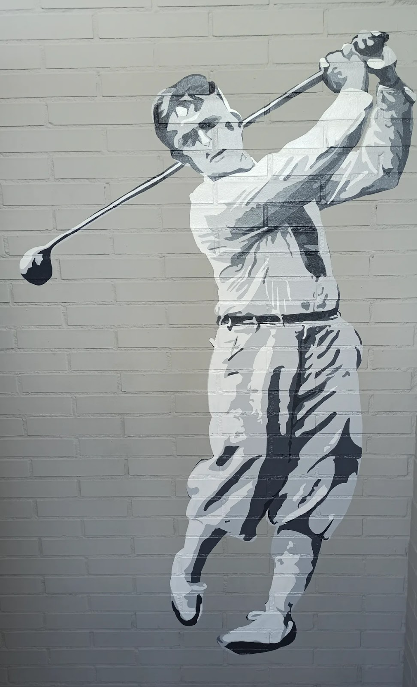
Vestuarios caballeros de club de golf
Aerografía sobre pared · Club de Golf Basozabal (2020)
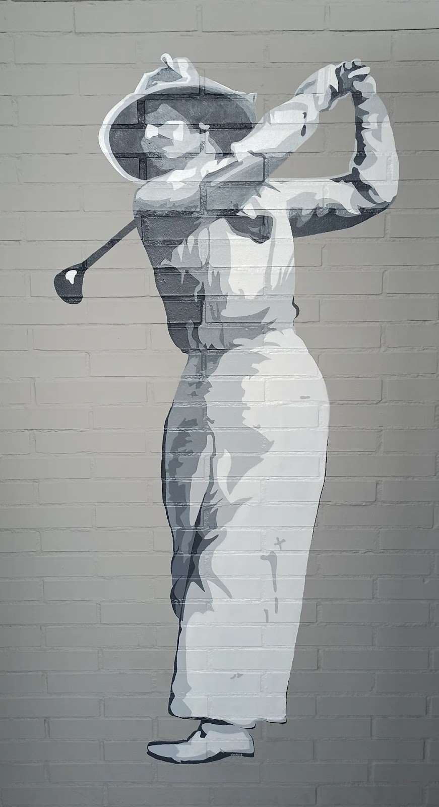
Vestuarios damas de club de golf
Aerografía sobre pared · Club de Golf Basozabal (2020)
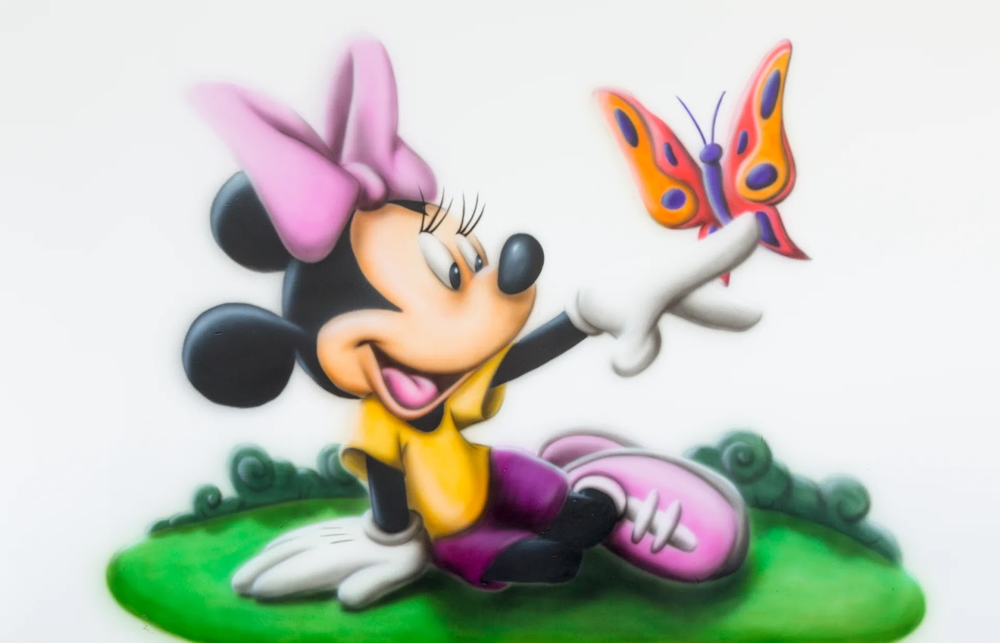
Mural guardería club de golf - Minnie Mouse
Aerografía en la guardería del Club de Golf Basozabal (2016)
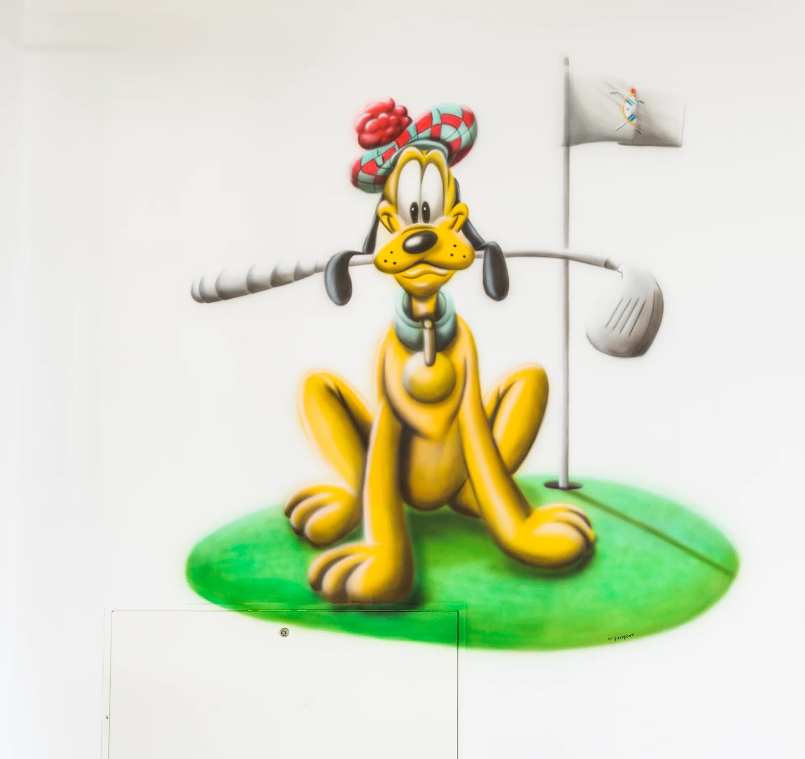
Mural guardería club de golf - Pluto
Aerografía en la guardería del Club de Golf Basozabal (2016)
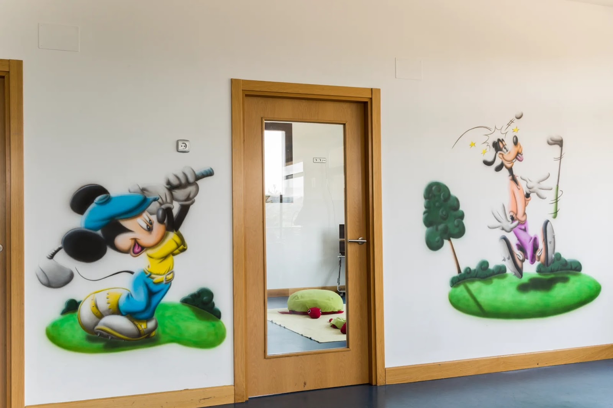
Mural guardería club de golf - Mickey y Goofy
Aerografía en la guardería del Club de Golf Basozabal (2016)
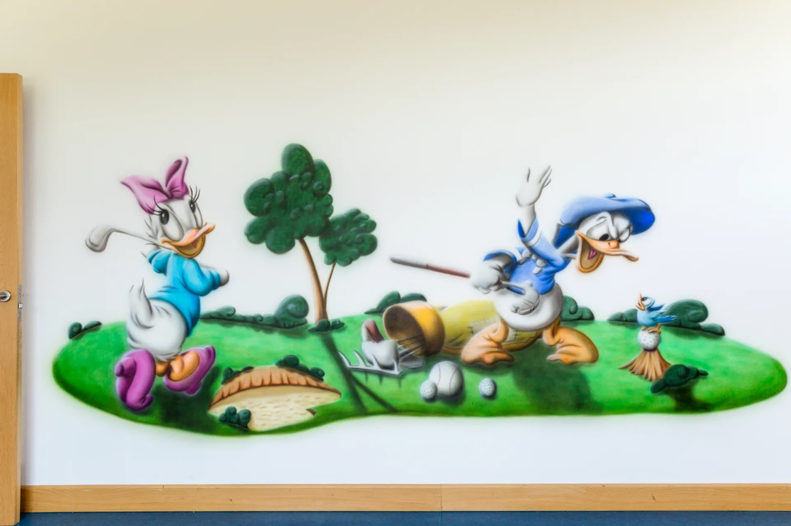
Mural guardería club de golf - Daisy y Donald
Aerografía en la guardería del Club de Golf Basozabal (2016)
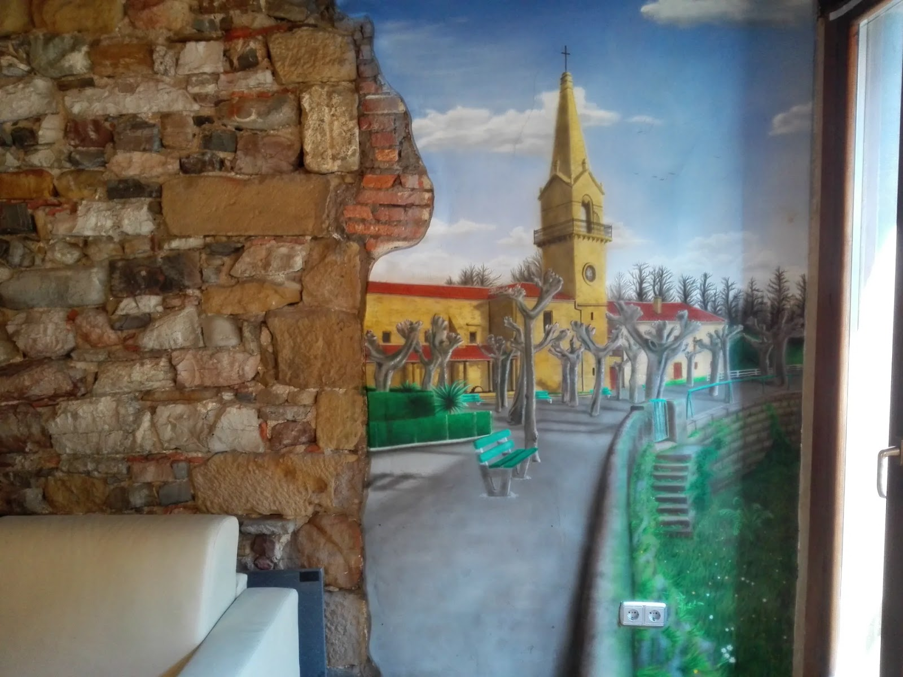
Mural Ermita Guadalupe
Aerografía en domicilio · Ermita Guadalupe de Hondarribia (2015)
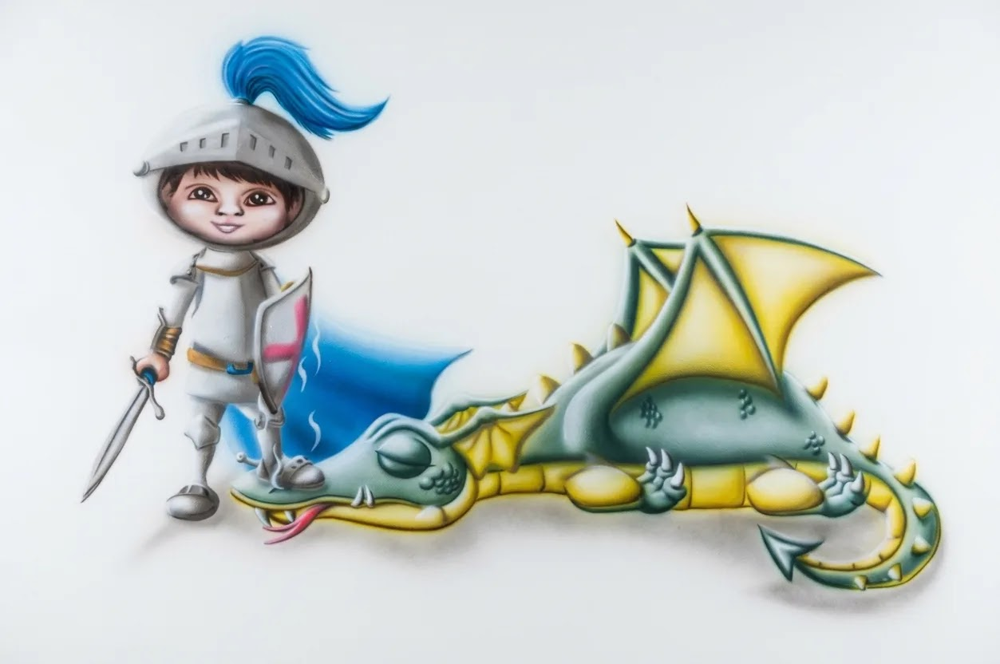
Aerografía caballero y dragón
Mural y cuento personalizado en dormitorio infantil con cama castillo (2016)
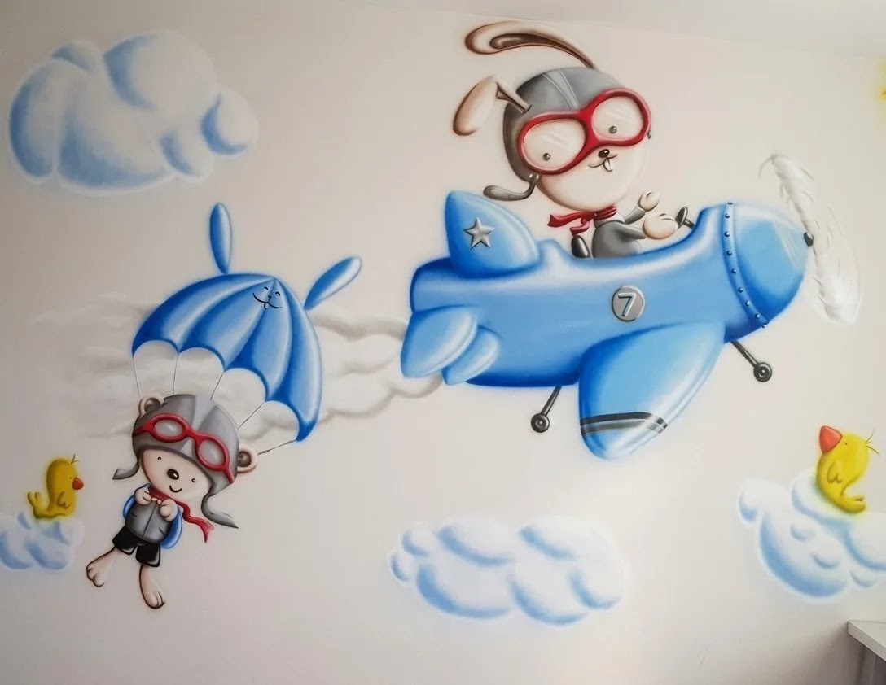
Mural Infantil «El Aviador»
Aerografía en dormitorio infantil · Conejo Piloto y Osito paracaidista (2011)
Mural Tradición de Regatas
Aerografía en Trofeos Egia de San Sebastián · Regatas tradicionales (2009)
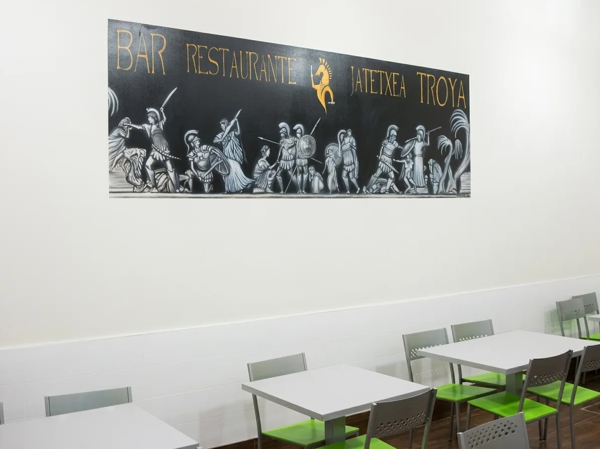
Mural Épico «Troya»
Aerografía sobre pared · Restaurante Troya de Astigarraga (2008)
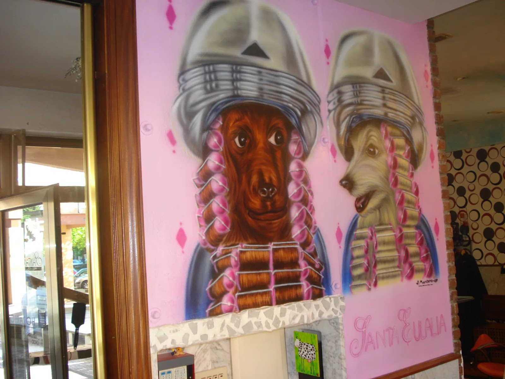
Mural Peluquería
Aerografía sobre pared · Peluquería Santa Eulalia de San Sebastián (2007)
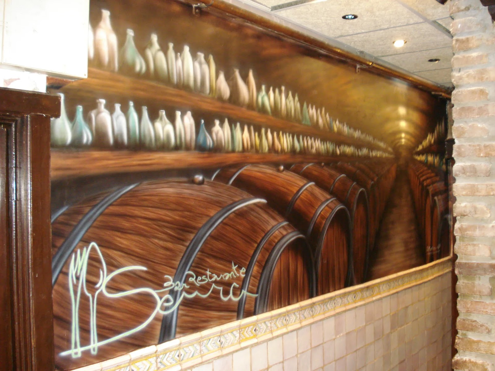
Mural Bodegas
Aerografía sobre pared · Bar Restaurante Senra de San Sebastián (2007)
¿Hablamos?
Abierto a oportunidades en desarrollo de software, colaboraciones tecnológicas, encargos artísticos y proyectos donde creatividad y tecnología trabajen juntas.
Tanto si tienes una propuesta de contratación o colaboración como si buscas un encargo a medida, cuéntame qué necesitas. Te responderé en menos de 48 horas.